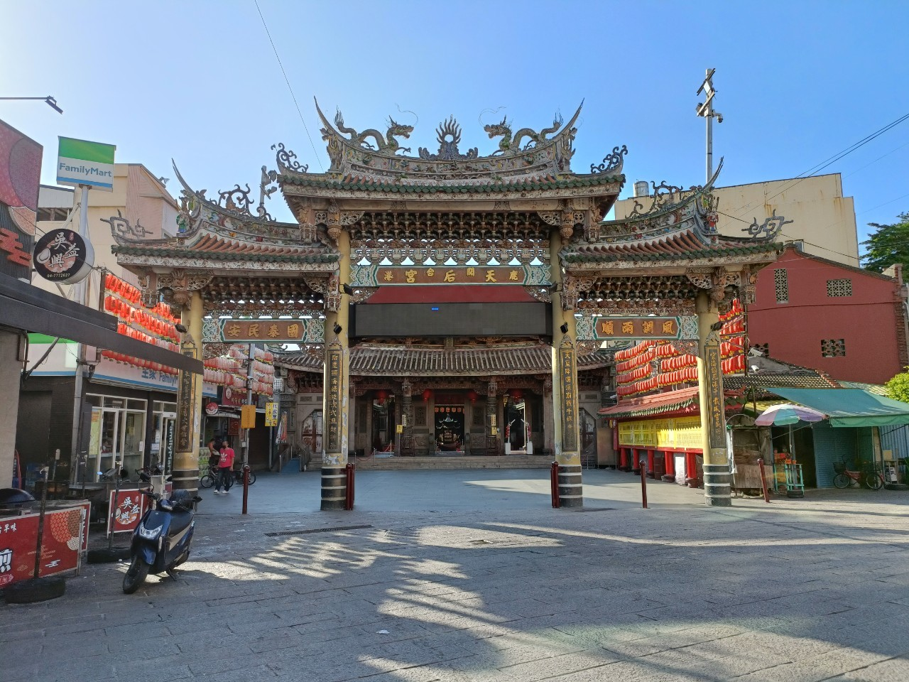

景點介紹
【天后宮】
鹿港天后宮是台灣歷史悠久的媽祖廟之一，位於彰化縣鹿港鎮中山路，是當地民眾信仰與文化的核心。
這座廟宇主祀天上聖母媽祖，為保佑漁民與航海平安的女神，自清朝以來便香火鼎盛。
📜 歷史與特色
- ⛩ 創建年代：建於清康熙年間（約西元1725年），為台灣三大媽祖廟之一。
- 🏛 建築藝術：融合閩南傳統工藝與廟宇建築美學，屋簷上的剪粘、木雕、彩繪極具藝術價值。
- 🔥 香火鼎盛：每年農曆三月二十三日媽祖誕辰，信眾雲集，場面壯觀。
🎐 文化與信仰意涵
- 🙏 庇佑地方：媽祖被視為守護神，庇佑百姓平安、出入順利。
- 🎎 地方精神中心：廟宇周邊形成熱鬧的商圈與文化生活，是居民聚會、祭典、慶典的重要場所。
🌟 遊客小建議
- 📷 必看景點：正殿神像、石雕龍柱、古匾與壁畫。
- 🛍周邊美食與老街：廟口旁的鹿港老街充滿懷舊風情，適合邊走邊吃邊拍照。